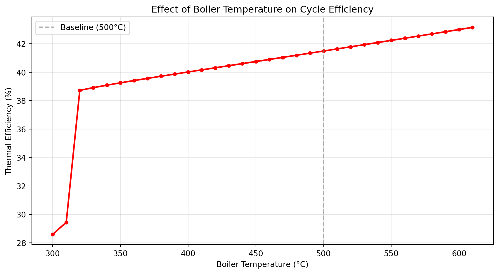

Describe the main components of a thermal power plant
Explain the ideal Rankine cycle and its four processes
Define thermal efficiency and identify factors that influence it
Interpret T-s and h-s diagrams for steam cycles
1. What Is a Thermal Power Plant?
A thermal power plant converts heat energy into electrical energy. The heat source may be combustion of fossil fuels, nuclear fission, concentrated solar, or geothermal energy. Regardless of the source, the working principle is the same: heat is used to produce high-pressure steam, which drives a turbine connected to a generator.
The majority of the world’s electricity is produced this way. Understanding how these plants work — and how to model them — is the foundation of this course.
Main Components
Component
Function
Boiler / Steam generator
Converts water to high-pressure steam
Turbine
Expands steam to produce shaft work
Condenser
Rejects heat, converts steam back to liquid
Feed pump
Returns condensate to boiler pressure
Generator
Converts shaft work to electricity
2. The Ideal Rankine Cycle
The Rankine cycle is the theoretical model underpinning all steam power plants. It describes how a working fluid (water/steam) cycles through four thermodynamic processes.
The Four Processes
Process 1 → 2: Isentropic expansion (Turbine)
High-pressure superheated steam enters the turbine at state 1 and expands isentropically (no heat transfer, no irreversibilities) to the condenser pressure at state 2. Shaft work is produced.
Process 2 → 3: Isothermal condensation (Condenser)
Wet steam at state 2 rejects heat to the cooling medium at constant pressure until it becomes saturated liquid at state 3. No work is done.
Process 3 → 4: Isentropic compression (Pump)
The saturated liquid is pumped isentropically from condenser pressure back to boiler pressure. The pump work is small compared to turbine output.
Process 4 → 1: Isobaric heat addition (Boiler)
Compressed liquid is heated at constant pressure through the boiler until it reaches the desired turbine inlet conditions at state 1.
State Point Summary
State
Location
Phase
1
Turbine inlet
Superheated steam
2
Turbine exit / Condenser inlet
Wet steam
3
Condenser exit / Pump inlet
Saturated liquid
4
Pump exit / Boiler inlet
Compressed liquid
3. Energy Analysis
For a steady-flow system, the first law of thermodynamics gives us the energy balance at each component.
Note that the pump work is typically less than 1% of the turbine output for steam cycles, which is why early approximations often ignored it. We will always include it in our calculations.
4. Steam Properties and the IAPWS-IF97 Standard
To evaluate enthalpies at each state point we need accurate steam property data. The International Association for the Properties of Water and Steam publishes the IF97 formulation, which is the industry standard for power plant calculations.
In this course we use the iapws Python library, which implements IF97.
Temperature : 500.0 °C
Pressure : 10.0 MPa
Enthalpy : 3375.06 kJ/kg
Entropy : 6.5993 kJ/kg·K
Specific vol : 0.0328 m³/kg
The IAPWS97 object accepts any two independent properties as arguments and returns all others. We will use temperature and pressure for the turbine inlet, and entropy for the isentropic processes.
5. Baseline Cycle Calculation
Let us compute all four state points for a representative utility cycle:
# State 1: Turbine inletstate1 = IAPWS97(T=500+273.15, P=10)# State 2: Turbine exit — isentropic (s2 = s1)state2 = IAPWS97(P=0.006, s=state1.s)# State 3: Pump inlet — saturated liquidstate3 = IAPWS97(P=0.006, x=0)# State 4: Boiler inlet — isentropic pump (s4 = s3)state4 = IAPWS97(P=10, s=state3.s)# Energy balancew_turbine = state1.h - state2.hw_pump = state4.h - state3.hq_boiler = state1.h - state4.hw_net = w_turbine - w_pumpeta = w_net / q_boilerprint(f"{'State':<8}{'T (°C)':<10}{'P (MPa)':<10}{'h (kJ/kg)':<12}{'s (kJ/kg·K)'}")print("-"*55)for label, state in [("1", state1), ("2", state2), ("3", state3), ("4", state4)]:print(f"{label:<8}{state.T -273.15:<10.1f}{state.P:<10.3f}{state.h:<12.2f}{state.s:.4f}")print(f"\nTurbine work : {w_turbine:.2f} kJ/kg")print(f"Pump work : {w_pump:.2f} kJ/kg")print(f"Net work : {w_net:.2f} kJ/kg")print(f"Boiler heat in : {q_boiler:.2f} kJ/kg")print(f"Thermal eff. : {eta:.1%}")
State T (°C) P (MPa) h (kJ/kg) s (kJ/kg·K)
-------------------------------------------------------
1 500.0 10.000 3375.06 6.5993
2 36.2 0.006 2031.62 6.5993
3 36.2 0.006 151.49 0.5209
4 36.4 10.000 161.53 0.5209
Turbine work : 1343.44 kJ/kg
Pump work : 10.04 kJ/kg
Net work : 1333.41 kJ/kg
Boiler heat in : 3213.53 kJ/kg
Thermal eff. : 41.5%
6. Factors Affecting Efficiency
Three operating parameters have the greatest influence on cycle efficiency:
Boiler temperature — Higher turbine inlet temperature increases \(w_{turbine}\) without proportionally increasing \(q_{boiler}\), raising efficiency. Limited by material constraints (typically 600–620°C for modern steels).
Boiler pressure — Higher pressure raises the mean temperature of heat addition, improving efficiency. Limited by turbine exit steam quality — excessive moisture damages turbine blades.
Condenser pressure — Lower condenser pressure (lower condensing temperature) reduces heat rejection and increases \(w_{net}\). Limited by cooling water temperature and vacuum system capability.
import numpy as npimport matplotlib.pyplot as pltdef cycle_eta(T_boiler=500, P_boiler=10, P_condenser=0.006): s1 = IAPWS97(T=T_boiler +273.15, P=P_boiler) s2 = IAPWS97(P=P_condenser, s=s1.s) s3 = IAPWS97(P=P_condenser, x=0) s4 = IAPWS97(P=P_boiler, s=s3.s) w_net = (s1.h - s2.h) - (s4.h - s3.h) q_in = s1.h - s4.hreturn w_net / q_in *100temperatures = np.arange(300, 620, 10)efficiencies = [cycle_eta(T_boiler=T) for T in temperatures]fig, ax = plt.subplots(figsize=(9, 5))ax.plot(temperatures, efficiencies, "ro-", linewidth=2, markersize=4)ax.axvline(x=500, color="gray", linestyle="--", alpha=0.6, label="Baseline (500°C)")ax.set_title("Effect of Boiler Temperature on Cycle Efficiency")ax.set_xlabel("Boiler Temperature (°C)")ax.set_ylabel("Thermal Efficiency (%)")ax.grid(True, alpha=0.3)ax.legend()fig.tight_layout()plt.show()

7. Steam Quality at Turbine Exit
Steam quality \(x\) represents the fraction of the mixture that is vapour:
\[x = \frac{m_{vapour}}{m_{total}} \quad (0 \leq x \leq 1)\]
At \(x = 0\) we have saturated liquid; at \(x = 1\) saturated vapour. Values below 0.88 are generally unacceptable in practice — liquid droplets erode turbine blades, reducing lifespan and efficiency.
print(f"Turbine exit quality (baseline): {state2.x:.3f}")if state2.x <0.88:print("WARNING: Quality below 0.88 — reheat cycle recommended")else:print("Quality acceptable for direct expansion")
The ideal Rankine cycle is our starting point. Real plants deviate from this ideal due to:
Isentropic inefficiencies in turbines and pumps
Pressure drops in pipes and heat exchangers
Heat losses from the boiler
Feedwater heating stages
In subsequent lectures we will add these real-world effects and explore cycle modifications such as reheat, regeneration, and combined cycles that push efficiencies above 45%.
Summary
A thermal power plant converts heat to electricity via a steam cycle
The ideal Rankine cycle has four processes: expansion, condensation, compression, and heat addition
Thermal efficiency is \(\eta = w_{net} / q_{boiler}\), typically 35–45% for modern steam plants
Steam properties are evaluated using the IAPWS-IF97 standard via iapws
Higher boiler temperature and pressure improve efficiency; low condenser pressure also helps
Preparation for Lab 1
Before attending Lab 1 on September 10:
Ensure iapws is installed in your environment (uv sync)
Review the four state point definitions above
Be ready to explain what turbine exit quality means and why it matters